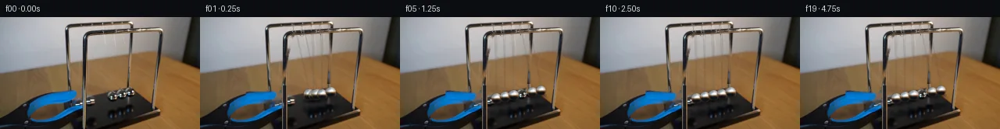

![首帧]()

Round 00
2026-11-06T08:32:50.080778+00:00像素候选变化代码 +479/−0inspection 更新
pixels 36b942327d0844c8 · code ffeb9bb176cad83e
查看本轮 generate.py 真实 diff
--- previous/generate.py
+++ current/generate.py
@@ -0,0 +1,479 @@
+"""PixelWorld case_0052: Newton's cradle — grabber releases two balls.
+
+Local pixel operations only (numpy / cv2 / PIL). Frame 00 is a byte copy of
+first_frame.png; frames 01-19 are composited from an inpainted clean plate,
+procedural chrome-ball sprites, faint bifilar strings, moving jaw-tip patches
+and analytic pendulum phase positions. See OBSERVATION.md / METHOD.md.
+"""
+from pathlib import Path
+import math
+import numpy as np
+import cv2
+from PIL import Image
+import artifact_io
+
+ROOT = Path(__file__).parent
+TMP = ROOT / '.tmp'
+TMP.mkdir(exist_ok=True)
+
+F0 = np.array(Image.open(ROOT / 'first_frame.png').convert('RGB'))
+H, W = 144, 256
+
+# ---------------------------------------------------------------- geometry
+REST = [np.array([123.3, 104.4]), np.array([134.4, 102.3]),
+ np.array([145.4, 100.2]), np.array([156.0, 98.7]),
+ np.array([166.9, 96.0])]
+HOLD = [np.array([101.0, 110.7]), np.array([113.9, 106.1])] # balls 0,1
+FAR = [np.array([174.0, 95.9]), np.array([184.9, 93.2])] # balls 3,4
+D_NEAR = [HOLD[i] - REST[i] for i in range(2)]
+D_FAR = [FAR[i] - REST[i + 3] for i in range(2)]
+
+PLATFORM_POLY = np.array([[108, 100], [184, 96], [200, 119],
+ [158, 144], [80, 140], [95, 117]], np.int32)
+
+
+def platform_top_y(x):
+ """Upper boundary of the black platform surface for fill/shadow clipping."""
+ pts = [(95, 117), (108, 100), (184, 96), (200, 119)]
+ if x <= pts[0][0]:
+ return 150
+ for (x0, y0), (x1, y1) in zip(pts[:-1], pts[1:]):
+ if x0 <= x <= x1:
+ return y0 + (y1 - y0) * (x - x0) / (x1 - x0)
+ return 150
+
+
+def ball_state(i, p):
+ """Image position and radius for ball i at phase p (sin fraction)."""
+ if i < 2:
+ pos = REST[i] + p * D_NEAR[i] if p <= 0 else REST[i].copy()
+ elif i > 2:
+ pos = REST[i] + p * D_FAR[i - 3] if p >= 0 else REST[i].copy()
+ else:
+ pos = REST[i].copy()
+ # tiny upward bow for the pendulum rise away from the two endpoints
+ bow = -0.6 * 4 * abs(p) * (1 - abs(p))
+ pos = pos + np.array([0.0, bow])
+ r = 6.7
+ if i < 2:
+ r += 0.60 * max(-p, 0)
+ elif i > 2:
+ r -= 0.40 * max(p, 0)
+ return pos, r
+
+
+# frame states: p per ball; schedule documented in OBSERVATION.md
+SQ = math.sqrt(0.5)
+STATES = []
+for f in range(20):
+ t = f * 0.25
+ ph = (t % 2.0) # one full transfer cycle = 2 s
+ p = [0.0, 0.0, 0.0, 0.0, 0.0]
+ if ph < 1.0: # near pair in, then far pair out
+ c = math.cos(math.pi * ph) # +1 near-amp ... 0 collision ... -1 far
+ if c >= 0:
+ p[0] = p[1] = -c
+ else:
+ p[3] = p[4] = -c
+ else: # far pair back, near pair out
+ c = math.cos(math.pi * (ph - 1.0))
+ if c >= 0:
+ p[3] = p[4] = c
+ else:
+ p[0] = p[1] = c
+ STATES.append(p)
+
+# ---------------------------------------------------------------- masks helpers
+def ellipse_mask(mask, cx, cy, rx, ry=None):
… diff truncated; 392 more lines …